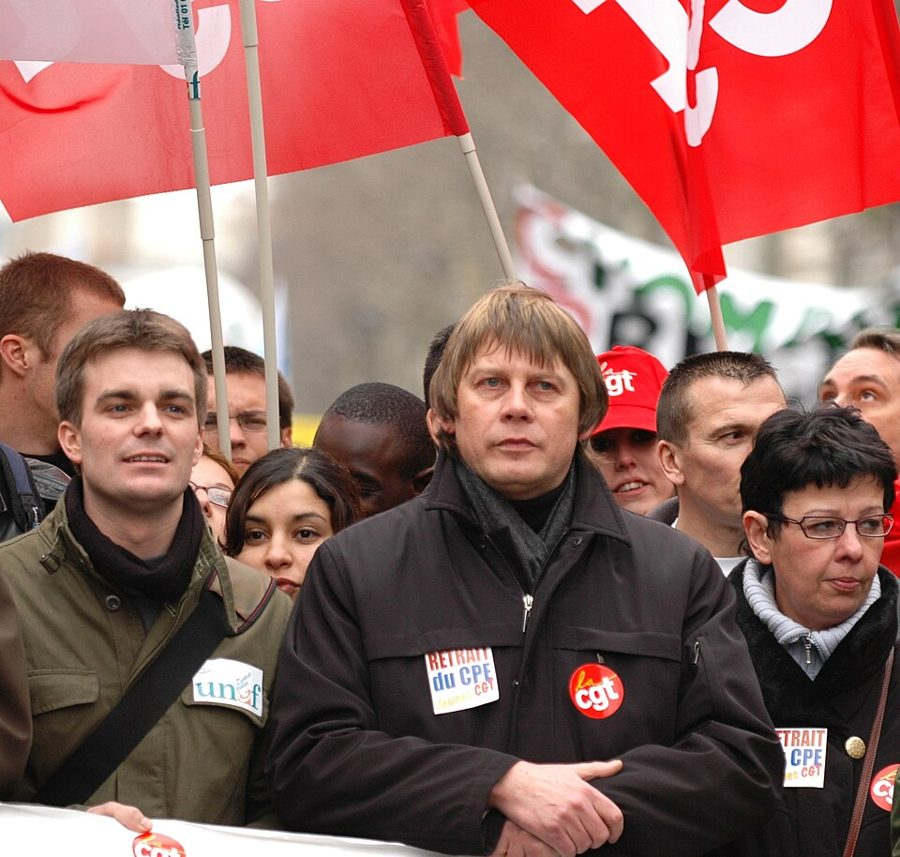
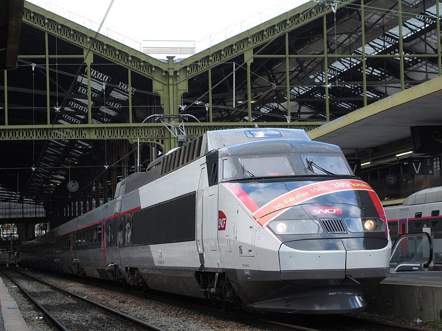
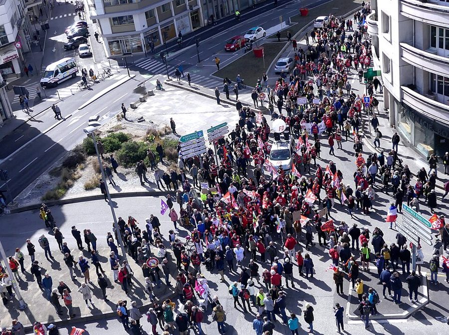

这一篇在做什么
1995 年 11 月底，法国公共部门大罢工，巴黎的地铁、火车、公交、邮局全停了。作者一家这年秋天刚到巴黎，一边写这场罢工怎么起来、谁在罢、为什么多数法国人站在罢工者一边；一边写他向街市烤肉摊订的一只感恩节火鸡，因为罢工迟迟到不了。全篇在这两条线之间来回跳：大的一条讲政治和全球化，小的一条讲一只火鸡。读的时候抓住作者给这场罢工下的判断（§1 末尾和 §3），再想想他为什么拿火鸡收尾。
塞纳河上的游船（bateau-mouche），2011 年。§1 说罢工时政府征用了这种船，改成渡船送上班的人沿河上下。Daniel Stockman，CC BY-SA 2.0，维基共享资源
读之前：这篇的来历
这一篇是罢工还没结束时写的：通篇用现在时，开头说火车已经两周没开，结尾还不知道罢工会怎样收场。它在书里排第 3 篇，属于第一部分「冬季马戏团」。前两篇写一家人刚搬来巴黎，这一篇第一次把镜头转向法国的公共生活。作者的身份要记住：他是《纽约客》派驻巴黎的美国记者，一家三口，儿子一岁多，罢工对他是新闻，也是买菜和过节的麻烦。
一场声势像革命的罢工，罢工的人到底想要什么？作者是站在他们一边，还是站在「该面对现实」的那一边？
读的时候带着这几个问题。不用先找答案，读完回来对照「检查一下理解」。
铁路工人反对的是什么？作者觉得这个理由大还是小？§1
不在工会里的普通法国人为什么也同情罢工？§1 §2
作者几次拿美国来比法国。这些比方是在笑话法国，还是在笑话美国，还是两边都有？§1 §2
这一篇的路线
全篇三节，每节都是「火鸡—罢工—火鸡」的走法：先讲烤肉摊的一个小场面，再拉远讲罢工和法国，最后又回到火鸡。读译本时如果觉得作者突然从买火鸡跳到了全球资本主义，那不是你漏看了什么，是他故意这样剪接。下面这张图把这条路线摊开。
火鸡
罢工
§1
§2
§3
烤架停了
一街大巴和游行
铁路工人、学生
六成人同情
坐 TGV 吗？
假装没发生
火鸡的「遗书」
快递照常 和 1968 比
另一种鸟
本站示意图。橙点是火鸡这条线，蓝点是罢工这条线，折线是阅读顺序，虚线是原书的分隔。 作者落在哪： 这场罢工有革命的声势，骨子里却是保守的：一群被眷顾了几十年的人，害怕好日子到头。作者认为它挡不住全球化，却也不全站在「面对现实」那一边：最后那只火鸡好得像另一种鸟，罢工的人想守住的，正是这种东西。
分节地图
原书这一篇有两处分隔，分成三节。每一节的粗体是读译本时认得出的场面；下面的斜体是英文这一节开头的几个词，打开电子书搜它就能跳到那里。读完一节打个勾。
烤鸡停转，一街的大巴和游行约 1300 词 The “generalized” strike that the big … 罢工怎么起来、谁加入、为什么多数人同情。留意作者给工会换的称呼。 堵车，摩托车开上人行道，火鸡终于到了约 800 词 Although workers and students are striking … 法国人「假装没发生」的习惯；罢工者拒绝的那个「现实」是什么。 只有快递和有线电视照常约 200 词 The only things that have been working … 拿 1968 年作比，下判断；最后一句又回到火鸡。
背景：作者默认你知道的事
按在书里出现的顺序排，标题前是节号。
§1 1995 年冬天的大罢工和「朱佩计划」1995 年 5 月希拉克（Jacques Chirac）当选总统，任命朱佩（Alain Juppé）为总理。11 月 15 日，朱佩在国民议会公布一揽子社会保障改革，其中一项是动铁路、地铁等公营企业员工的「特殊退休制度」（régimes spéciaux）。铁路工人带头罢工，地铁、邮政、电信、学生陆续加入，12 月 5 日和 12 日是两次最大的游行。12 月 15 日政府撤回了退休那部分，罢工随后逐渐平息；医保部分保留了下来。这一篇写在这一切的中途。
朱佩，1995 年 9 月，罢工前两个多月。原图说明是他在看法兰西体育场的模型。Archives nationales，CC BY-SA 4.0，维基共享资源
§1 「几个月前的炸弹」1995 年夏秋，阿尔及利亚的武装伊斯兰组织（GIA）在巴黎等地连续制造爆炸，最严重的一次是 7 月 25 日巴黎圣米歇尔站的快铁爆炸。作者一家正是这年秋天到的巴黎。书里拿丽兹酒店的入住率开玩笑：炸弹最多的时候生意照常，罢工一来反而掉了四分之一。
§1 两大工会和一位铁路工会领袖法国的工会按全国性「联合会」组织，彼此竞争。书里出现两家：劳工总联合会（CGT），历史上和法共关系密切；工人力量（Force Ouvrière，FO），1948 年从 CGT 分裂出来。书里特意说明 FO 名字激进、立场其实温和。§2 引了 Bernard Thibault 的话，他当时领导 CGT 的铁路工人联合会，因为这次罢工成了全国知名的人物，1999 年起任 CGT 总书记。

Bernard Thibault（中）2006 年走在一次游行的最前面，那时他已是 CGT 总书记。这次游行与本书无关。Marie-Lan Nguyen（User:Jastrow），公有领域，维基共享资源
路易十六 Louis XVI 法国大革命时的国王。1789 年 7 月 14 日攻占巴士底狱那天，他的日记只写了一个词 Rien（无事）。一般认为那是他的打猎记录：那天没有猎获。§1 拿它挖苦自己大难临头还在问火鸡。
金里奇 Newt Gingrich 美国共和党政治人物，1995 年起任众议院议长，主张大幅削减联邦开支。§1 说朱佩政府对自己的紧缩方案「有点金里奇式的得意」，美国读者一看就懂。
§1 铁路工人、TGV 和法兰西喜剧院法国国营铁路（SNCF）的员工叫 cheminots，享有单独的退休制度，书里说其中很多人五十岁就能拿全额退休金。TGV 是法国的高速列车，1981 年巴黎到里昂的第一条线通车，是法国人引以为傲的工程。书里说政府直接往铁路工人的退休基金里补钱，所以他们更像法兰西喜剧院（Comédie-Française）的演员：那是 1680 年成立、靠国家供养的剧团，算国家文化财产。

第一代 TGV（TGV Sud-Est）的一列，2021 年停在巴黎里昂站，纪念它 1981 年创下的 380 公里时速纪录。车身是后来的涂装。S23725，CC BY-SA 4.0，维基共享资源 §1 「光荣三十年」和「鬼舞」「光荣三十年」（les Trente Glorieuses）指二战后法国高速增长的三十年，大约 1945 到 1975 年，说法来自经济学家富拉斯蒂耶（Jean Fourastié）1979 年的一本书。书里拼作 trentes，是笔误。「鬼舞」（Ghost Dance）是 1890 年前后美国西部印第安人的宗教运动，相信跳这种舞能让死去的亲人复活、野牛回来，同年年底以伤膝河屠杀告终。作者用它比喻罢工：热情是真的，想召回的东西回不来了。
§1 感恩节火鸡美国的感恩节是 11 月第四个星期四，1995 年是 11 月 23 日，恰好是罢工开始的前一天。法国不过这个节，所以作者要专门向烤肉摊订一只，从乡下送来，晚几天补过。火鸡在美国是感恩节的标准菜，超市里常见冷冻火鸡，这一点 §2 要用到。
§2 毕加索、萨特和「假装德国人不在」1940 到 1944 年德国占领巴黎。毕加索留在巴黎作画，萨特在圣日耳曼的咖啡馆里写作，两人都在这几年写出、画出了重要作品。作者说他们「在咖啡馆里坐了四年，假装德国人不在」，是夸张的玩笑，用来说明法国人面对危机的老办法。
§2 朗德的火鸡朗德（Landes）在法国西南部，大片松林，以林间散养的家禽出名。那只火鸡的「遗书」说自己在朗德的林子里像野物一样长大、吃玉米、夜里独自睡在树上，这是法国农产品常见的推销口吻，作者拿它和美国超市里打了油的冷冻火鸡对比。
§3 1968 年五月1968 年 5 月，巴黎大学生占领校园、在拉丁区筑街垒，随后工人罢工波及全国，人数以百万计，戴高乐政府一度动摇。法国人说起任何大罢工都要拿它来比。§1 那句学生「重新学习扔铺路石的老手艺」，指的就是 68 年学生撬起街上的铺路石砸警察。
词与短语
只收中文译文多半传不出原味的地方：熟词生义、反话和挖苦、典故、夹在英文里的法文。读译本读到觉得别扭、不知道作者在说什么时，来这里找那一节的；斜体小字是原句里的几个英文词，在电子书里搜它就能找到原文。
§1 烤鸡停转，一街的大巴和游行
a fastidious distinction
… making a fastidious distinction between …
抠字眼的区分
工会把这次叫「普遍化的罢工」（generalized），特意不叫「总罢工」（general）。法国历史上总罢工带着革命意味，工会留着这个词备用。作者用 fastidious（过分讲究的）点破这种文字游戏。
cause célèbre
… has become a minor cause célèbre here
轰动一时的话题
法文借词，原指引起公众关注的案件。地铁停了，铁轨下靠摩擦取暖的蟋蟀要冻死，居然成了「小小的公共议题」。作者在笑话巴黎人什么都能当回事。
portent
… are supposed to treat as portents
预兆
作者在挖苦驻外记者的套路：把街头一件小事写成大事的征兆，括号里那句「集市里早就流传……」就是在模仿这种腔调。烤鸡不转了，他半开玩笑地把它当成政府要倒台的预兆。
Ça commence
… he said grimly. It’s beginning …
（法文）开始了
烤肉师傅说的法语。作者紧接着说，他并不确定开始的是什么：这个含糊正是后面全篇要追问的。
inconsequence
… with the stupid inconsequence common to people …
答非所问、不着边际
不是「无关紧要」，是说话前言不搭后语。天下要乱了，他问的是火鸡还送不送。括号里接着拿路易十六的日记作陪：大革命那天，国王也只记了一句「无事」。
near-insurrectionary
… was in itself a near-insurrectionary sight
简直像造反
说的不是游行，是大巴违章停车。巴黎警察对违停管得极严，十个街区停满大巴，本身就像造反了。故意大词小用。
the lore of the heaved cobblestone
… relearning the lore of the heaved cobblestone
扔铺路石的老手艺
lore 是代代相传的经验，heave 是用力扔。指 1968 年学生撬铺路石砸警察（见「背景」）。用 lore 这种讲民间传说的词，带着调侃：学生在重温一门失传的手艺。
job action
… as a one-day job action
（工人的）抗议行动
美式说法，泛指罢工、怠工这类劳工抗争，比 strike 中性。罢工最初只计划一天。
Gingrichian
… self-congratulatory, mildly Gingrichian delight …
金里奇式的
拿人名造形容词，美国读者一看就懂：当年美国众议院议长金里奇也在推大幅削减开支（见「背景」）。mildly 是「有点」，作者给法国政府和美国议长都留了点面子。
ensconced for life
… are ensconced for life in the public sector
安安稳稳待一辈子
ensconce 是把自己安顿在舒服、安全的地方。用在工会会员身上，暗示他们是有铁饭碗的人，不是穷苦的产业工人。
shock troops of the bourgeoisie
Now they are the shock troops of the bourgeoisie.
资产阶级的突击队
前一句说工会「不再是革命的先锋」，这一句把革命年代的说法倒过来用：工会如今替中产阶级冲锋，保卫的是既得的好日子。全篇的判断在这里第一次露出来。
tag-team wrestling pair
… like a veteran tag-team wrestling pair …
摔跤双打搭档
美式职业摔跤的双打，两人轮流上场。学生和铁路工人轮番上阵，对手是一对「嘴上没毛」（beardless）的新手：希拉克和朱佩刚上台半年。
ghost dance
… a vast petit bourgeois ghost dance …
（印第安人的）鬼舞
不是「鬼魂跳舞」，是 1890 年前后印第安人祈求亡者复活、野牛回来的宗教舞蹈（见「背景」）。petit bourgeois 是小资产阶级。合起来说：一场想用热情召回过去的仪式。§2 结尾又用了一次。
Was he planning to take the TGV?
Was he planning to take the TGV?
它本来打算坐 TGV 来吗？
师傅说「罢工让他动不了」，这个 him 可以指火鸡，也可以指送货的人。作者故意当成火鸡，问它是不是要坐高速列车进城。这一句之后原书就分隔了，§1 在笑话里收住。
§2 堵车，摩托车开上人行道，火鸡终于到了
an iconography of endurance
… has even produced an iconography of endurance
一套「咬牙坚持」的标准画面
iconography 原指宗教画里的固定图式。媒体反复拍骑车、滑旱冰、划船上班的人，成了罢工的标准照。作者紧接着说这些照片不太真实，真实的是堵车。
bouchons
… the endless bouchons, or traffic jams …
（法文）堵车
bouchon 本义是瓶塞，口语里指交通堵塞，很形象。作者顺手给了英文解释。
Hogs
… than give up their Hogs
哈雷摩托
Hog（猪）是哈雷戴维森摩托车的昵称，前一句刚提到 Harley-Davidson。
soldier through
… is not to soldier through it but …
硬撑过去
soldier 当动词，像士兵一样咬牙坚持。作者说法国人遇到危机不硬撑，而是装作没这回事；所以骑摩托冲上人行道的人比滑旱冰的人更像巴黎人。
a liberal paradise
… into what is called a liberal paradise …
自由市场的天堂
liberal 在欧洲指经济上的自由主义：少管制、劳动市场灵活，和美国说的 liberal（偏左）几乎相反。法国人怀疑英美德在推销的，正是这种天堂。
not even the merchandise is transported like merchandise
… not even the merchandise is transported like merchandise
连货物都不当货物运
接着上一段 Thibault 那句「公民绝不能像货物一样被运送」玩文字游戏：在法国，连一只火鸡都不是普通货物，它有出身、有尊严，还写了遗书。
last will and testament
… the turkey’s last will and testament began
遗嘱
法律文书的固定说法，两个词意思重复。用在火鸡的产地说明上，故意郑重其事。前一句的 suicide note（遗书）也是同一个玩笑。
§3 只有快递和有线电视照常
cry of the heart
The strike is one more cry of the heart …
发自肺腑的呼喊
直译法文 cri du cœur。作者用它给罢工定性：这不是有纲领的革命，是一声出于情感的抗议。
not quite incidentally
The turkey, not quite incidentally, was …
这可不全是顺便一提
incidentally 是「顺便说」，not quite 把它否了一半：作者在提醒你，最后这句火鸡不是闲笔。好得像另一种鸟的火鸡，正是罢工者想守住、全球化可能冲掉的那种东西。
后来
这一篇停在 1995 年 12 月罢工的中途。下面接着讲这件事后来怎样。每条都写了核对日期，这类内容过一两年就会变。
铁路工人的特殊退休制度
1995 年政府让了步，这套制度保住了。2018 年，议会通过《新铁路公约法》（nouveau pacte ferroviaire），SNCF 从 2020 年 1 月 1 日起不再按「铁路员工身份」招人，新员工进普通退休制度；此前入职的人仍留在原来的制度里。也就是说，书里铁路工人拼命保住的东西没有被一刀取消，而是不再接收新人，随着老员工退休慢慢消失。核对于 2026-10。依据：2018 年 6 月 27 日第 2018-515 号法律，法国国民议会和参议院对议员质询的书面答复。
法定退休年龄：60、62、64，然后暂停
朱佩之后，法国几乎每届政府都要碰退休制度，几乎每次都引来大罢工。2010 年法定退休年龄从 60 岁提到 62 岁；2023 年再提到 64 岁，游行持续数月，政府最后用宪法第 49 条第 3 款绕过国民议会表决通过。2025 年 12 月，议会通过 2026 年社会保障预算，把这次提高暂停到 2028 年 1 月 1 日，1964 到 1968 年出生的人因此可以比原计划早一个季度退休。核对于 2026-10。依据：2025 年 12 月 30 日第 2025-1403 号法律（2026 年社会保障筹资法），法国劳动部网站。

2023 年 3 月，法国东南部尚贝里反对退休改革的游行，中间是工人力量（FO）的队伍。离这一篇写的那个冬天快三十年。Florian Pépellin，CC BY-SA 4.0，维基共享资源 值得停下来的句子
They are no longer the vanguard of the revolution. Now they are the shock troops of the bourgeoisie.— §1，讲工会的那一段结尾。本站译：他们不再是革命的先锋，如今是资产阶级的突击队。
两句话结构完全对称：no longer … / Now …，vanguard 对 shock troops，revolution 对 bourgeoisie。都是军事比喻，对象却倒了过来。中文译出意思不难，难的是这种对仗带出的讽刺味：作者没说工会坏，只说它换了主人。
The strike is one more cry of the heart from people who felt blessed for a long time and now feel threatened.— §3，全篇的判断。本站译：这场罢工是又一声发自肺腑的呼喊，喊的人长久以来觉得自己受眷顾，现在觉得受威胁。
注意时态：felt blessed for a long time 是过去持续，now feel threatened 是现在。全篇对罢工的看法就压在这两个动词的对比里。one more 也有分量：不是第一声，也不会是最后一声。
检查一下理解
先在心里答，再点开。答错的那题，回书里把对应那一节再读一遍。
1.（§1）作者说他真正意识到罢工有多严重，是因为什么？ 街市上烤肉摊的烤架停了。这些摊子一年到头都在转烤鸡，连八月和圣诞后的淡季都不停。作者半开玩笑地把它当成驻外记者爱写的那种「预兆」。
2.（§1）铁路工人抗议的具体是什么？作者怎么看这个理由？ 政府的社保改革要动他们由国家补贴的退休金，很多人不能再五十岁拿全额退休。作者说这个具体的不满小得离谱，政府大概也因此以为他们得不到同情。
3.（§1）政府为什么低估了学生罢工？作者拿美国的什么来比？ 政府看不出学生和铁路工人有什么共同利益，又觉得失业率一成的国家里学生成不了主角。但「学生运动」在法国人心里有魔力，就像「家庭农场」在美国人心里一样，能唤起理想化的过去，哪怕本人从没参加过、从没住过。
4.（§1）罢工有没有一套革命的主张？那为什么不在工会的人也同情它？ 没有。罢工核心那批公务员的口号说穿了就是「永远维持现状」，整个调子是中产阶级的，想召回光荣三十年那种对未来的笃定。一周时的民调显示六成多的人同情罢工。
5.（§2）作者为什么说骑哈雷冲上人行道的人比滑旱冰的人「更像巴黎人」？ 他说法国人面对危机的态度不是硬撑过去，而是假装它没发生。滑旱冰上班是硬撑；骑摩托上人行道、照样我行我素，才是装作没这回事。
6.（§2）罢工者拒绝「面对」的现实是什么？作者对这种拒绝是什么态度？ 批评者说的全球资本、服务经济、灵活的劳动市场。作者认为法国人半个世纪来靠时而面对、时而转身也过得不错，他说不在工会的小资产阶级同情者那种不肯为全球经济「改造」法国的倔强「相当可敬」。
7.（§3）作者怎样比较 1995 年和 1968 年？ 68 年是披着政治外衣的文化革命；95 年到目前为止像是借了文化仪式（学生加工人的大罢工）的政治革命，而这个仪式并不合适：罢工天生是破坏性的，背后的情感却很保守。
用一句话说这一篇，写给一个没读过的人。
精彩回顾
读过又忘了，从这里想起来。挑的是这一篇最值得记住的场面和说法，不按原书顺序；每条后面是节号，想细看就回书里那一节。全书各篇的这一节都收在全书回顾 。
一句话： 1995 年巴黎大罢工像一场革命，其实是一群过惯了好日子的人在护住现状；作者一边看穿它，一边吃着那只好得出奇的火鸡。
烤鸡不转了 街市的烤架一年到头都在转，罢工几天后停了。作者把它当成罢工严重的第一个信号，又自嘲这是驻外记者爱写的那种「预兆」。
§1 资产阶级的突击队 工会会员多是端铁饭碗的公营企业员工。作者说工会不再是革命的先锋，而是替中产阶级冲锋、保卫既得好日子的突击队。
§1 火鸡的遗书 火鸡终于送到，附着一份口吻像遗书的产地说明，讲自己在朗德的林子里散养长大。作者说，在法国连货物都不当货物运。
§2 哈雷开上人行道 堵车时摩托车干脆开上人行道。作者说这比滑旱冰上班更像巴黎人：法国人对付危机，不是硬撑，是假装它没发生。
§2 只有全球化照常上班 全城停摆，跨国快递、传真照常，唯一准时上门的是给作者装有线电视的人，装好了正好在 CNN 上看罢工。罢工者反抗的，正是这个照常运转的世界。
§3